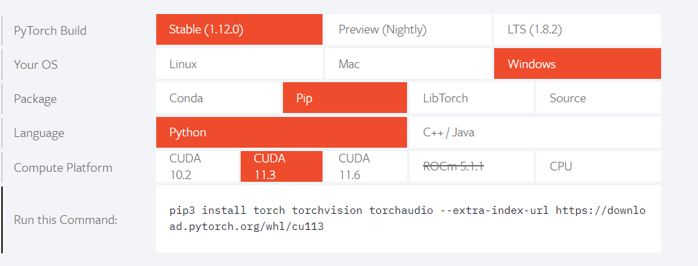
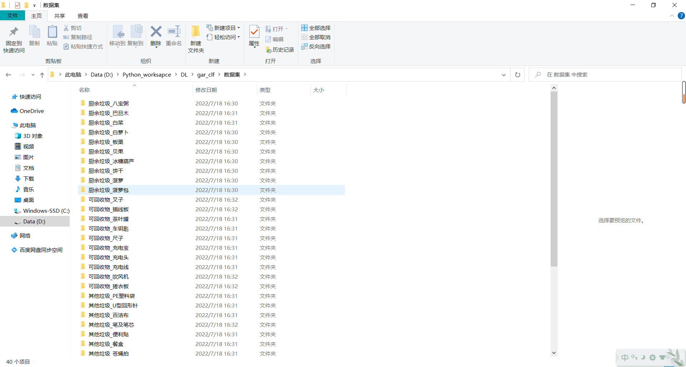
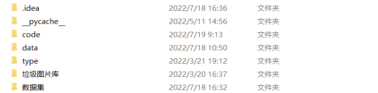
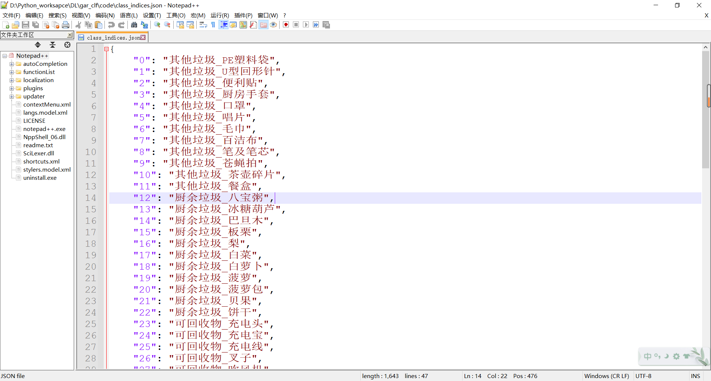
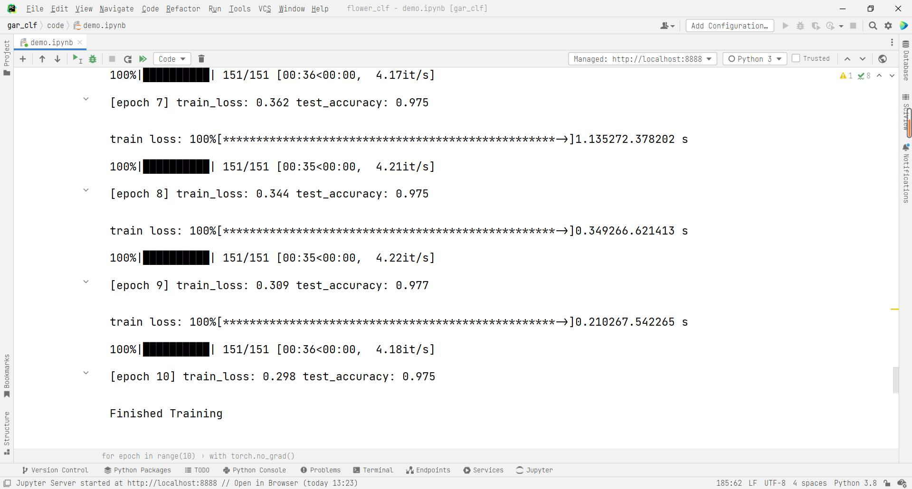
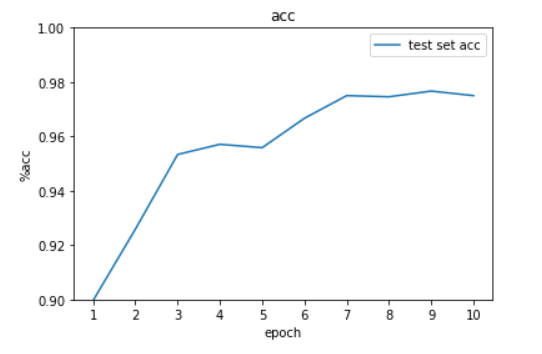

1. 环境搭建
使用的环境为pytorch1.11，直接去官网即可下载PyTorch，去官网选择你需要的配置，直接复制命令在命令行进行粘贴即可：

2. 数据准备
2.1 数据格式

数据集中共有厨余垃圾，可回收物，其他垃圾，有害垃圾四种垃圾，每种垃圾各有11种，一共有44个小类，代码放在code文件夹中，与数据集放在同一文件目录下。

2.2 划分数据集
找到了数据集之后我们需要把数据集划分为训练集和测试集，建立dataset.py文件，具体代码如下：
1
2
3
4
5
6
7
8
9
10
11
12
13
14
15
16
17
18
19
20
21
22
23
24
25
26
27
28
29
30
31
32
33
34
35
36
37
38
39
40
41
42
43
44
45
46
47
| import os
from shutil import copy
import random
def mkfile(file):
if not os.path.exists(file):
os.makedirs(file)
file_path = "../数据集//"
garbage_class = os.listdir("../数据集")
mkfile('../data/train')
for cla in garbage_class:
mkfile('../data/train/' + cla)
mkfile('../data/val')
for cla in garbage_class:
mkfile('../data/val/' + cla)
split_rate = 0.1
for cla in garbage_class:
cla_path = file_path + '/' + cla + '/'
images = os.listdir(cla_path)
num = len(images)
eval_index = random.sample(images, k=int(num * split_rate))
for index, image in enumerate(images):
if image in eval_index:
image_path = cla_path + image
new_path = '../data/val/' + cla
copy(image_path, new_path)
else:
image_path = cla_path + image
new_path = '../data/train/' + cla
copy(image_path, new_path)
print("\r[{}] processing [{}/{}]".format(cla, index + 1, num), end="")
print()
print("processing done!")
|
划分好的数据集如下：
3. 模型训练
3.1 数据增强
数据增强可以有效避免过拟合，使用torchvision中的transforms可以方便的对训练集数据进行数据增强，常见的数据增强方法有旋转，剪切等，本文采用简单的裁剪和翻转。
1
2
3
4
5
6
7
8
9
10
11
12
13
14
15
16
17
18
19
20
21
22
|
import torch
import torch.nn as nn
from torchvision import transforms, datasets
import torch.optim as optim
import json
import time
device = torch.device("cuda" if torch.cuda.is_available() else "cpu")
print(device)
data_transform = {
"train": transforms.Compose([transforms.RandomResizedCrop(224),
transforms.RandomHorizontalFlip(p=0.5),
transforms.RandomHorizontalFlip(0.5),
transforms.ToTensor(),
transforms.Normalize((0.5, 0.5, 0.5), (0.5, 0.5, 0.5))]),
"val": transforms.Compose([transforms.Resize((224, 224)),
transforms.ToTensor(),
transforms.Normalize((0.5, 0.5, 0.5), (0.5, 0.5, 0.5))])}
|
3.2 创建DataLoader
1
2
3
4
5
6
7
8
9
10
11
12
13
14
15
16
17
18
19
20
21
22
23
24
25
26
| from torch.utils.data import DataLoader
image_path = "../data/"
train_dataset = datasets.ImageFolder(root=image_path + "/train",
transform=data_transform["train"])
train_num = len(train_dataset)
train_loader = DataLoader(train_dataset,
batch_size=16,
shuffle=True,
num_workers=0)
validate_dataset = datasets.ImageFolder(root=image_path + "/val",
transform=data_transform["val"])
val_num = len(validate_dataset)
validate_loader = torch.utils.data.DataLoader(validate_dataset,
batch_size=16,
shuffle=True,
num_workers=0)
|
3.3 对数据集标签进行映射
1
2
3
4
5
6
7
| garbage_list = train_dataset.class_to_idx
class_dict = dict((val, key) for key, val in garbage_list.items())
json_str = json.dumps(class_dict, indent=4, ensure_ascii=False)
with open('class_indices.json', 'w', encoding='utf-8') as json_file:
json_file.write(json_str)
|
生成的class_indices.json文件如下：

包含0~44个垃圾的类型索引，此文件主要用于后续推理时使用，对应出垃圾类别。
3.4 模型选择
本文选择在ImageNet上预训练的efficientnet_b1进行迁移学习，这个网络的大小只有30多MB，虽然效果还不错，但如果要追求更高的精度，且有大显存的GPU，可以考虑采用更大的网络（如efficientnet_b7）进行训练，可以得到更好的效果。
1
2
3
4
5
6
7
8
9
10
11
12
13
14
15
16
17
18
19
20
21
22
23
24
25
26
27
28
29
30
31
32
33
34
35
36
37
38
39
40
41
42
43
44
45
46
47
48
49
50
51
52
53
54
55
56
57
58
| import torchvision
from tqdm import tqdm
net = torchvision.models.efficientnet_b1(pretrained=True)
net.to(device)
loss_function = nn.CrossEntropyLoss()
optimizer = optim.Adam(net.parameters(), lr=0.0002)
save_path = 'model.pth'
best_acc = 0.0
test_accs = []
for epoch in range(10):
net.train()
running_loss = 0.0
time_start = time.perf_counter()
step = 0
for step, data in enumerate(train_loader, start=0):
images, labels = data
optimizer.zero_grad()
outputs = net(images.to(device))
loss = loss_function(outputs, labels.to(device))
loss.backward()
optimizer.step()
running_loss += loss.item()
rate = (step + 1) / len(train_loader)
a = "*" * int(rate * 50)
b = "." * int((1 - rate) * 50)
print("\rtrain loss: {:^3.0f}%[{}->{}]{:.3f}".format(int(rate * 100), a, b, loss), end="")
print('%f s' % (time.perf_counter() - time_start))
net.eval()
acc = 0.0
with torch.no_grad():
for val_data in tqdm(validate_loader):
val_images, val_labels = val_data
outputs = net(val_images.to(device))
predict_y = torch.max(outputs, dim=1)[1]
acc += (predict_y == val_labels.to(device)).sum().item()
val_accurate = acc / val_num
test_accs.append(val_accurate)
if val_accurate > best_acc:
best_acc = val_accurate
torch.save(net.state_dict(), save_path)
print('[epoch %d] train_loss: %.3f test_accuracy: %.3f \n' %
(epoch + 1, running_loss / step, val_accurate))
print('Finished Training')
|
3.5 精度可视化
部分训练结果如下

作出测试集acc曲线：
1
2
3
4
5
6
7
8
9
10
11
12
13
| import matplotlib.pyplot as plt
plt.ylim(0.9, 1)
x = list(range(1, 11))
plt.plot(x, test_accs, label="test set acc")
plt.legend()
plt.xticks(x)
plt.xlabel("epoch")
plt.ylabel("%acc")
plt.title('acc')
plt.savefig("acc.jpg")
|

仅训练10个epoch，acc就达到了0.977 ， 增大epoch应该还可以提高acc，但由于这里显卡不太行，所以只跑了10个epoch，后续可以考虑增大epoch，让网络达到收敛。
4. 预测图片
打开文件系统，选择一张图片进行预测。